鞍山市铁东区胜利小学欢迎您！
首页 > 详情信息
2020年12月26日，我校全体教师集中西校区参加了本学期第三次（总第96次）“三环五步”教科研活动。参加本次活动的还有集团成员学校张浦二小的老师们。
首先，由八位青年老师进行课堂展示。
语文组，我校的苏航老师执教部编版语文三年级上册习作8《那次玩得真高兴》的作前指导课，作为第二年的青年教师，苏老师在台上教态自然，师生互动良好，指导学生调动记忆库选择一件印象深刻的有趣的事情作为习作素材，并有条理地写下来。课后，由实小和二小的16名观察组老师上台进行探讨交流。
张浦二小的徐振兴老师上《那次玩得真高兴》的作后指导课，针对学生当场写出的作文，徐老师从取一个好题目入手，指导学生要写出自己的特色，让学生学有所得。
下午，来自南京凤凰语文研究营的沈高明主任及张小玲老师对此次活动进行了一个专题讲座，从习作学程设计入手，和老师们探讨情境导入的有效实施，以及作后讲评的评量安排。
 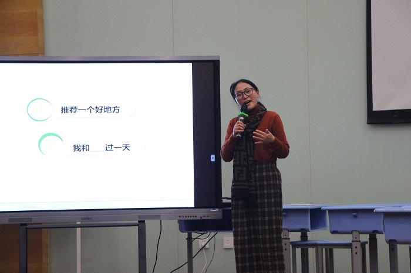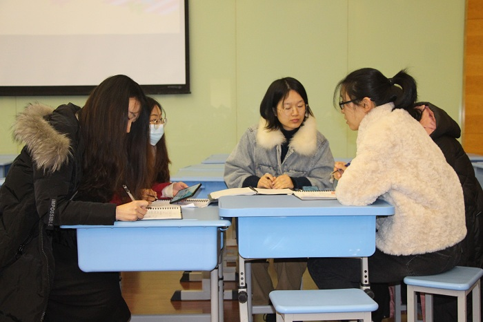
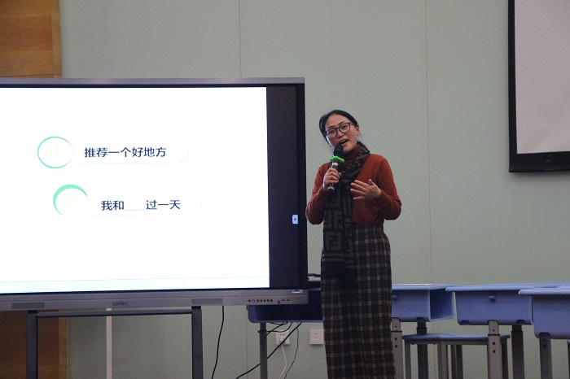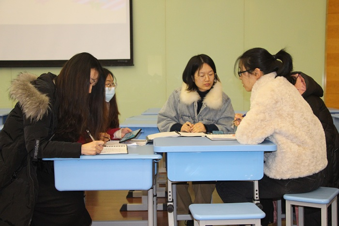
数学组，我校的曹慧老师执教了《多边形的内角和》，本节课借助圣诞的情境带领学生一起来研究多边形的内角和，在研究过程层次性展开，让学生在动手操作的过程中最终能感受到分成三角形个数最少最简便。在得出规律前让学生经历了猜想和验证的过程，使学生对规律的理解更深刻。最后利用闯关赢小屋装饰的环节充分调动学生学习的积极性。
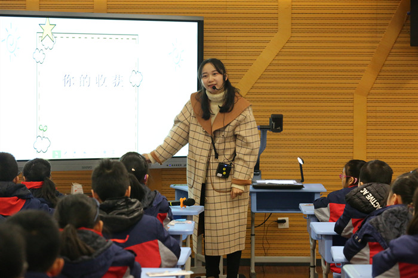
张浦二小的陈忠明老师执教了《用字母表示数》，本课的教学是安排在五年级教学的，现在放在四年级教学，相对来说起点拔高了，要让学生理解含有字母的式子既可以表示数量，还可以表示数量关系这对学生来说是个难点，对四年级的学生来说更难，所以把书上的例2改成了选择的形式，有效化解了本节课的难点。
本节课的一个重点是让学生知道为什么要用字母表示数，了解到用字母表示数的意义和价值，用字母表示数是因为需要所以产生，因此在新授小结之后安排了一个趣味游戏，充分调动课堂氛围，提高学生的积极性，从而更好的应对下面的练习。
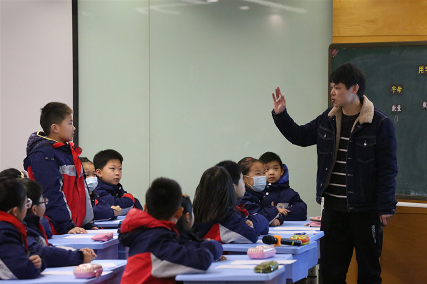
英语组，我校的孙凌琳老师执教了《5A Unit8 At Christmas(Grammar time)》，孙老师的这节课设计思路明朗，教学过程明确，她也十分注重唤醒学生在课堂中的主动意识。她把自己装扮成圣诞老人，带给了学生四只圣诞袜子，引出了她圣诞一天的活动：buy things in the morning, make salads at noon, decorate in the afternoon和make a card in the evening。孙老师紧扣本课语法内容first, next, then和finally四个顺序词，激活学生思维状态，在课堂上，孙老师给出学生一些语言支架，引导学生在生生互动、小组合作中，以语篇形式输出，很好地起到学生主体、老师主导的作用，有助于培养学生的发散性思维能力。为大家呈现了精致、细腻、扎实的苏式课堂。
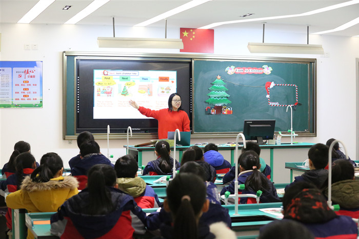
张浦二小的朱颖颖老师执教了《5A Unit8 At Christmas(story time)》，朱老师整体上课的教态很自然，总是面带微笑，让人感觉亲切自然。在授课过程中，全程贯穿了本课的一个重点： first，next，then，finally，多次练习，反复巩固。教学的难度也是层层递进的，由简到难，题型多样化，同时注重纠正学生的发音。
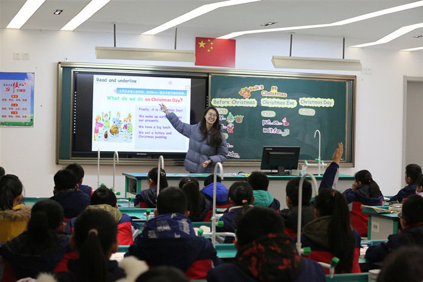
综合组，我校的程丽老师执教了《立定跳远》，程老师的课堂设计既有趣味性也有针对性，本课采用情景教学，以游戏为主要教学手段，模仿荷塘中的小青蛙，提高学生学习的主动性和积极性。课中以呼啦圈作为教具贯穿整节课，贯彻一物多用原则，充分利用器材。动感的音乐伴随整个课堂，有节奏感的韵律操和放松操充分活动和放松学生身心，提高学生学习效率。
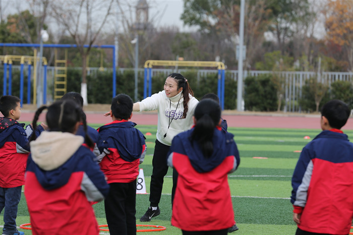
我校的吴淑芳老师执教了《我们的现在和将来》，这节课属于“造型表现”领域，本课更侧重于创新思维的训练，吴老师以神奇的“相机”为主线贯穿整堂课，不管是课题、ppt、以及相关的教具都蕴藏着相机的元素，学生能直观的感受到相机带来的魅力。在愉悦的氛围中学习知识，初步尝试绘画人物动态，然后教师示范让学生直观的熟悉方法，再进行作品分析拓宽学生思维，层层递进。这是一节学生十分喜爱的美术课。
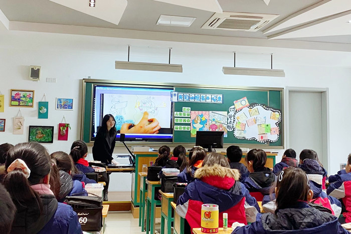
张浦二小的刘永志老师执教了《耐久跑》，刘老师合理运用现有的场地器材创新，打破传统的“跑圈”方式教学，通过“电话号码”的形式，方便教师巡视指导，观察纠正。课中巧借生活元素，利用多种方式方法组织练习，使学生在游戏、比赛中自主探究，体会正确的呼吸方法与节奏；关注学生差异，区别对待，让不同耐力水平的学生得到收获。
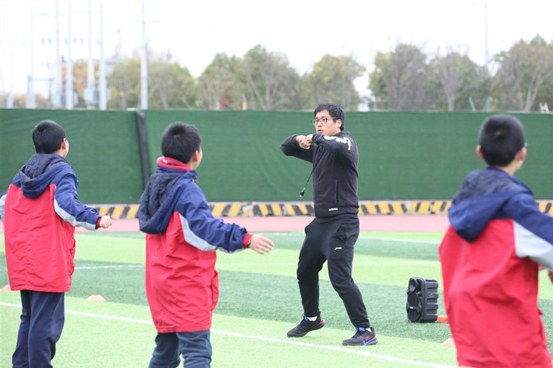
之后，语文组、数学组、英语组和综合组的八位老师先进行了说课，围绕教学环节阐述了设计意图，后由我校及张浦二小的各学科的骨干老师进行点评。
本次活动不仅体现了各教研组认真负责的态度和团结协作的精神，也引发了老师们对课堂教学更深层次的思考。同时，为青年老师们互相学习和锻炼提供了很好的平台，提升了青年教师们的课堂驾驭能力与课堂教学技能，也增进了学校之间、集团成员之间的交流和友谊。